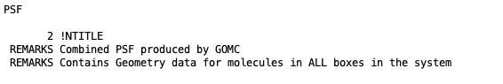
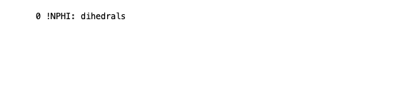

GOMC’s Output Files¶
- GOMC currently supports several kinds of output:
STDIO (“console”) output
File output
Block Averages
PDB
PSF
Molecule distribution (GCMC only)
Histogram (GCMC only)
Free energy data (NVT and NPT only)
GOMC output units:
Properties |
Units |
|---|---|
Energy |
\(K\) |
Pressure, Pressure Tensor |
bar |
Heat of vaporization |
\(kJ/mol\) |
Volume |
\(\AA^3\) |
Density |
\(kg/m^3\) |
Mol Density |
\(molecule/Å^3\) |
Surface Tension |
\(mN/m\) |
Free Energy |
\(kJ/mol\) |
Console Output¶
A variety of useful information relating to instantaneous statistical and thermodynamic data (move trials, acceptance rates, file I/O messages warnings, and other kinds of information) is printed to the STDIO, which, in Linux, will typically be displayed in the terminal. This output can be redirected into a log file in Linux using the > operator.
$ GOMC CPU NVT in.conf > out_isobutane.log &
Statistical and thermodynamic information is provided in console output.
Energy
– Intermolecular (LJ)
– Intramolecular bonded
– Intramolecular nonbonded
– Tail corrections
– Electrostatic real
– Electrostatic Reciprocal
– Electrostatic self
– Electrostatic correction
– Total electrostatic energy (sum of real, reciprocal, self, and correction)
– Total Energy (sum of the all energies)
Pressure
Pressure Tensor (\(P_{xx},P_{yy},P_{zz}\))
Total pressure
Statistic
Volume
Pressure
Total molecule number
Total Density
Surface Tension
Mol fraction of each species
Mol density of each species
Detailed move, energy, and statistical or thermodynamic information for each simulation box will be printed in
three different sections. Each section’s title will start with MTITLE, ETITLE, and STITLE for move,
energy, and statistical information, respectively. The instantaneous values for each section will start with
MOVE_#, ENER_#, and STAT_# for move, energy, and statistical values, respectively. Where, # is the
simulation box number. In addition, if pressure calculation is activated and enabled to print, pressure tensor
will be printed in the console output file. This section starts with PRES_# and print the diagonal value of
pressure tensor \(P_{xx}\), \(P_{yy}\),and \(P_{zz}\), respectively. The second element after the
title of each section is the step number.
In order to extract the desired information from the console file, “grep” and “awk” commands can be used with a proper title section. For example, in order to extract total energy of the system, the following command needs to be executed in terminal:
$ grep "ENER_0" output_console.log | awk '{print $3}'
Here, “output_console.log” is the console output file and “$3” represents the second element of the “ENERGY_BOX_0” section.
Note
Surface Tension is calculated using Virial method according to following equation,
The first section of this console output typically includes some information relating the system, CPU, GPU, and RAM. In continue, console output includes information regarding the input file (configuration file), force field reading, summary of the structure of the molecule, bonded and non-bonded parameters, and minimum and maximum coordinate of molecules. This output is important; it may contain text relating to issues encountered if there was an error in the current run (e.g. a bad parameter, unknown keyword, missing parameters in the configuration file, etc.)

Printing summary of configuration file.¶

Reading parameter file and printing the summary of the force field.¶

Reading the PDB files for each box, printing the min and max coordinates.¶
Next, the energy and statistic title, initial energy and statistic of the system’s starting configuration will print:
Note
The frequency of printing MOVE_#, ENER_#, STAT_#, and PRES_# is controlled by ConsoleFreq
parameter in configuration file.
Note
User can control the output of the thermodynamic properties in ENER_# and STAT_# using the following
parameters in configuration file:
#################################
# ENABLE: BLK, FLUC.
#################################
OutEnergy true true
OutPressure true true
OutMolNum true true
OutDensity true true
OutVolume true true
OutSurfaceTension false false
Note
If total energy of simulation is greater that \(1.0e^{12}\), System Total Energy Calculation will be performed at EqSteps to preserve energy value.

Printing initial energy of the system and statistical values.¶
After the simulation starts, move, energy, and statistical title, followed by their values for each simulation box, will print:

At the end of the run, Monte Carlo move acceptance for each molecule kind and simulation box, total amount of time spent on each Monte Carlo move, total timing information, and other wrap up info will be printed.
Note
Printed energy and statistical values are instantaneous values.
In order to keep the format of console file consistent and print the calculated properties with high accuracy, scientific format is used.
It’s important to watch the acceptance rates and adjust the move percentages and CBMC trial amounts to get the desired rate of move acceptance.
Block Output Files¶
GOMC tracks a number of thermodynamic variables of interest during the simulation and prints them all in one file for each box.
Energy
– Intermolecular (LJ)
– Intramolecular bonded
– Intramolecular nonbonded
– Tail corrections
– Electrostatic real
– Electrostatic Reciprocal
– Total Energy (sum of the all energies)
Virial
Statistic
Pressure
Surface Tension (using virial method)
Volume
Total molecule number
Total Density
Mol fraction of each species
Mol density of each species
Heat of vaporization
Printing the average energy of the system and statistical values.¶
At the beginning of each file, the title of each property followed by their average values is printed. Desired data can be extracted, as explained before, using the “awk” command. For example, in order to extract total density of the system, the following command need to be executed in terminal:
$ cat Blk_OutputName_BOX_0.dat | awk '{print $2}'
Here, “Blk_OutputName_BOX_0.dat” is the block-average file for simulation box 0 and “$2” represents the second column of the block file.
Note
The frequency of printing average thermodynamic properties is controlled by BlockAverageFreq
parameter in configuration file.
Note
User can control the output of the average thermodynamic properties, using the following parameters in configuration file:
#################################
# ENABLE: BLK, FLUC.
#################################
OutEnergy true true
OutPressure true true
OutMolNum true true
OutDensity true true
OutVolume true true
OutSurfaceTension false false
Note
In order to keep the format of BlockOutput file consistent and print the calculated properties with high accuracy, scientific format is used.
PDB Output Files¶
GOMC capables of outputing the molecular coordinates during the simulation in PDB format. GOMC outputs two type of PDB files:
The last state of simulation at a specified step (
OutputName_BOX_n.pdb, where n defines the box number).The state of simulation at a specified step (
OutputName_BOX_n_restart.pdb, where n defines the box number).
1. Restart Trajectory¶
The restart PDB file contains only ATOM that exist in each boxes at specified steps. This allows the
user to load this file into GOMC once Restart simulation was active. If restart PDB output was enabled,
one file for NVT or NPT and two files for Gibbs ensemble or grand canonical ensemble will be outputed.
Header part of this file contains important information and will be needed to restart the simulation:
Simulation cell dimensions and angles.
Maximum amount of displacement (Å), rotation (\(\delta\)), and volume (\(\AA^3\)) that used in Displacement, Rotation, and Volume move.

The coordinates of isobutane molecules in simulation Box 0, at steps 30000, in OutputName_BOX_0_restart.pdb file.¶

The coordinates of isobutane molecules in simulation Box 1, at steps 30000, in OutputName_BOX_1_restart.pdb file.¶
Note
The frequency of printing restart PDB file is controlled by RestartFreq
parameter in configuration file.
Important
The beta value in restart PDB file defines the mobility of the molecule.
Beta = 0.00: molecule can move and transfer within and between boxes.Beta = 1.00: molecule is fixed in its position.Beta = 2.00: molecule can move within the box but cannot be transferred between boxes.
2. Simulation Trajectories¶
The trajectory PDB file contains an entry for every ATOM, in all boxes read. This allows VMD (which requires a constant number of atoms) to properly parse the simulation frames. If PDB output was enabled, one file for NVT or NPT and two files for Gibbs ensemble or grand canonical ensemble will be outputed. Header part of this file contains simulation cell dimensions and angles, frame number, and simulation steps.

The coordinates of all isobutane molecules at beginning of the simulation, in OutputName_BOX_0.pdb file.¶

The coordinates of all isobutane molecules at beginning of the simulation, in OutputName_BOX_1.pdb file.¶
Note
The frequency of printing trajectory PDB file is controlled by CoordinatesFreq
parameter in configuration file.
Important
For atoms not currently in a box, the coordinates are set to
< 0.00, 0.00, 0.00 >.The occupancy value defines the box, which molecule is in (box 0 occupancy=0.00 ; box 1 occupancy=1.00)
The beta value in trajectory PDB file defines the mobility of the molecule.
Beta = 0.00: molecule can move and transfer within and between boxes.Beta = 1.00: molecule is fixed in its position.Beta = 2.00: molecule can move within the box but cannot be transferred between boxes.
PSF Output File¶
At the beginning of the simulation, a merged PSF file will be outputed into OutputName_merged.psf,
It contains the topology for every molecule in all simulation boxes, corresponding to the merged PDB format.
Loading PDB files into merged PSF file in VMD allows the user to visualize and analyze the results.
The PSF file contains six main sections: remarks, atoms, bonds, angles, and dihedrals.
Each section starts with a specific header described bellow:
NTITLE: Remarks on the file.Remaks generated by GOMC.¶
NATOM: The atom names, residue name, atom types, and partial charges of each atom.
Atom section, taken from a merged PSF file for isobutane. The fields in the atom section, from left to right are atom ID, segment name, residue ID, residue name, atom name, atom type, charge, mass, and an unused 0.¶
NBOND: The covalent bond section lists four pairs of atoms per line.
Bond section, taken from a merged PSF file for isobutane.¶
NTHETA: The angle section lists three triples of atoms per line.
Angle section, taken from a merged PSF file for isobutane.¶
NPHI: The dihedral sections list two quadruples of atoms per line.Dihedral section, taken from a merged PSF file for isobutane.¶
Molecule Distribution Output File¶
In grand canonical Monte Carlo (GCMC) simulation, GOMC outputs a binned number of molecules, observed in the system. This file can be used to detect the overlap between various GCMC simulation states. Sufficient overlap between various GCMC simulation is required in histogram reweighting method.
The molecule distribution will be outputed to a file, with a name constructed from parameters defined
in configuration file (DistName, RunNumber, and RunLetter). For instance, for the first
molecule kind and following parameters in configuration file
#################################
# OutHistSettings
#################################
DistName dis
RunNumber 3
RunLetter a
GOMC will output the molecule distribution into “n1dis3a.dat” file.
Molecule number distribution taken for isobutane simulation in GCMC simulation. The field in molecule distribution file, from left to right are number of molecule observed in the simulation and number of samples.¶
Important
In case of system with multiple molecule kinds, multiple molecule distribution files will be outputed by GOMC (“n1dis3a.dat”, “n2dis3a.dat”, …).
Note
The Molecule distribution files will be outputed at
EqSteps.The frequency of outputing molecule distribution file is controlled by
HistogramFreqparameter in configuration file.The observation frequency is ontrolled by
SampleFreqparameter in configuration file.
Histogram Output File¶
In grand canonical Monte Carlo (GCMC) simulation, GOMC outputs the observed number of molecule (for each molecule kind) and energy of the system (nonbonded + LRC). This file only will be used for histogram reweighting purposes.
The histogram will be outputed to a file, with a name constructed from parameters defined
in configuration file (HistName, RunNumber, and RunLetter). For instance, for
the following parameters in configuration file
#################################
# OutHistSettings
#################################
HistName his
RunNumber 3
RunLetter a
GOMC will output the histogram data into “his3a.dat” file.
The header of the histogram file contains information of the simulated system, such as temperature, number of molecule kind, chemical potential, and x, y, z dimensions of simulation box.

The histogram taken for isobutane simulation in GCMC simulation. The field in histogram file, from left to right are number of molecule observed for the first molecule kind in the simulation and energy of the system (nonbonded + LRC).¶
Important
In case of system with multiple molecule kinds, multiple column will be printed, which each column represents the number of molecule for each molecule kind.
Note
The Histogram file will be outputed at
EqSteps.The frequency of outputing Histogram file is controlled by
HistogramFreqparameter in configuration file.The observation frequency is ontrolled by
SampleFreqparameter in configuration file.
Free Energy Output File¶
GOMC is capable of calculating absolute solvation free energy in NVT and NPT ensemble, using thermodynamic integration and free energy purturbation methods. GOMC outputs the raw informations, such as the derivative of energy with respective to current lambda (\(\frac{dE}{d\lambda}\)) and energy different between current lambda state and all other neighboring lambda states (\(\Delta E_{{\lambda}_i \rightarrow {\lambda}_j}\)), which is essential to calculate solvation free energy with various estimators, such as TI, BAR, MBAR, and more.
The header of Free_Energy_BOX_0_ OutputName.dat contains the following information:
Temperature of the simulation.
The index of the lambda vector.
Value of \({\lambda}_{Coulomb}\) and \({\lambda}_{VDW}\).
Monte Carlo step number.
Total energy of the system.
Derivative of energy with respective to lambda for coulomb interaction (\(\frac{dE}{d\lambda_{Coulomb}}\)).
Derivative of energy with respective to lambda for VDW interaction (\(\frac{dE}{d\lambda_{VDW}}\)).
Energy different between current lambda state and all other neighboring lambda states (\(\Delta E_{{\lambda}_i \rightarrow {\lambda}_j} = E_{{\lambda}_j} - E_{{\lambda}_i}\))

Snapshot of GOMC free energy output file (Free_Energy_BOX_0_ OutputName.dat).¶
Important
For simulation in NPT ensemble or NVT ensemble with activated pressure calculation (PressureCalc True),
additional column will be printed to represent \(PV\) term.
Note
The frequency of outputing free energy data is controlled by FreeEnergyCalc parameter in configuration file.